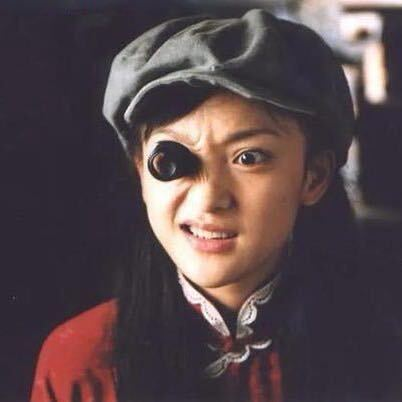
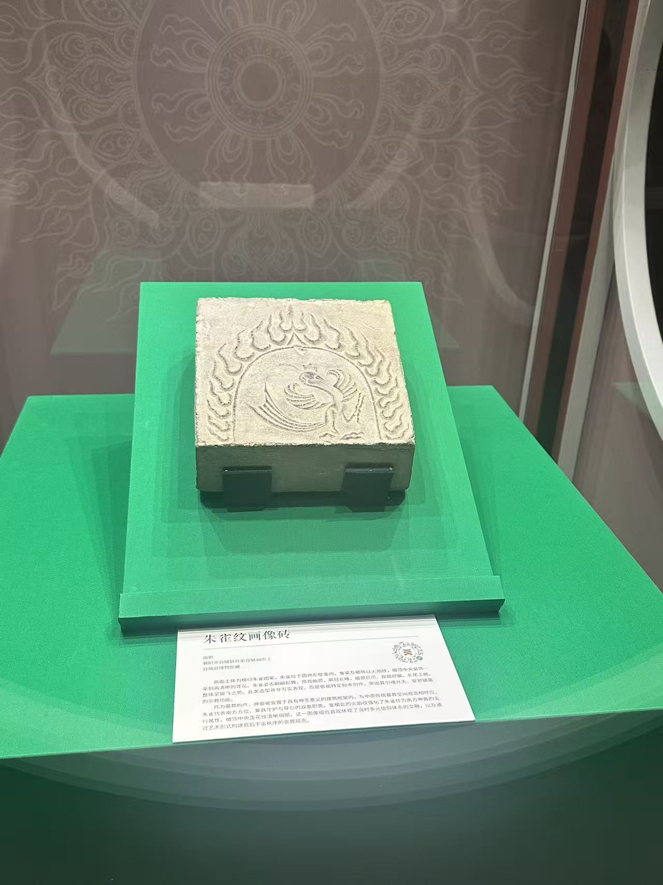
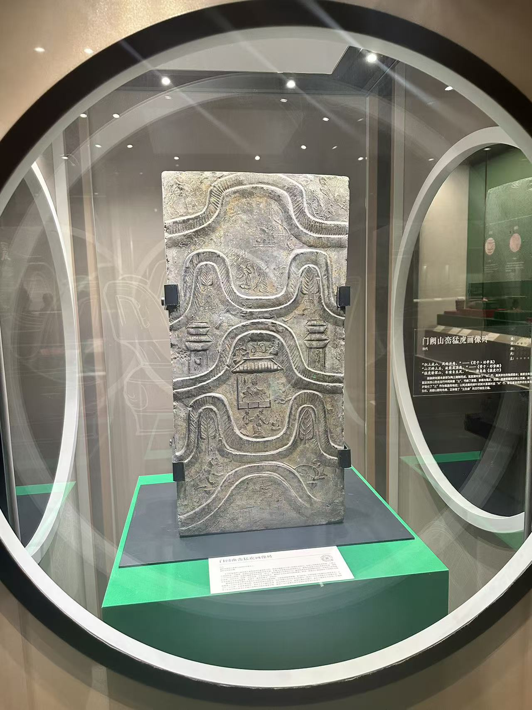
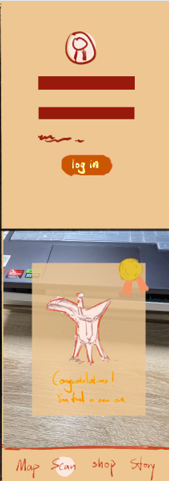
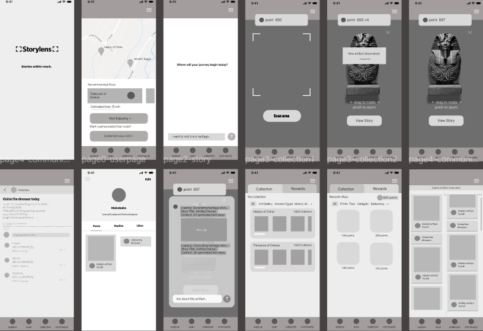

Minghao Lin
Student ID: 2361282
Prototype builder who tests interaction flows and keeps the project timeline on track.
An AI-Powered Personalized Museum Companion
StoryLens is a mobile-based interactive concept that transforms traditional museum visits into an engaging, story-driven journey. Inspired by Pokemon GO and Duolingo, the system encourages visitors to explore exhibitions, unlock artifact stories, collect digital items, and stay motivated through points and missions.
Student ID: 2361282
Prototype builder who tests interaction flows and keeps the project timeline on track.

Student ID: 2361320
UX researcher focused on turning user interviews into practical design decisions.

Student ID: 2362441
Frontend helper who enjoys clean UI and keeps pages simple and accessible.

Student ID: 2361143
Content planner who writes short stories for museum artifacts and discovery tasks.
Age: 21 - Computer Science Student
"I'm not really into museums, so I want an experience that feels worth my time."
Haley is a busy computer science student who often works late and usually spends time alone. She rarely visits museums because she feels many exhibitions are dull and not interactive enough, but she is curious about technology-based museum experiences.
Gets overwhelmed by long and formal exhibit descriptions, and finds traditional museum experiences boring and not interactive enough.
Prefers simple, direct guidance and tends to engage more when learning is clear, interactive, and supported by technology.
She is motivated by interactivity first, then entertainment, and finally learning value.
Age: 32 - Museum Educator
"I think that technology should make museum learning more meaningful, not just more attractive."
Jeanette is an education researcher interested in cultural learning and technology-enhanced experiences. She is outgoing and energetic, visits museums frequently, and explores how digital technologies can improve learning outcomes in museum settings.
Finds that some interactive exhibits do not support meaningful learning, and struggles to find museum experiences that effectively combine cultural value with digital innovation.
Visits museums regularly, pays close attention to learning design, and actively evaluates whether interactive systems support engagement and education.
Most motivated by educational value, followed by research inspiration and cultural learning impact.
| Journey steps | Discovery & Onboarding | Exploration & Questing | Interactions | Rewards & Sharing |
|---|---|---|---|---|
| Actions | Haley saw a WebXR treasure hunt poster featuring "technology interaction" at the museum entrance. She opened her browser, entered the address, activated AR mode, and obtained a digital treasure map. | Haley avoided crowded areas and enjoyed some solo time. She followed AR navigation arrows on the map to locate ancient artifacts. Upon reaching each booth, she scanned exhibits to trigger AR effects. | After scanning an artifact, a 3D virtual animation appeared with historical background. Haley tapped interactive buttons, observed the artifact in 360 degrees, and gradually developed a deeper understanding. | After completing all treasure hunt tasks, Haley checked her record and received a meaningful digital souvenir. |
| Touchpoints | Treasure Hunt web page | Exhibit objects and phone screen | 3D interactive model | Final settlement page and digital memorabilia display |
| Emotion Curve | ||||
| Emotions | With a bit of doubt but curiosity about integrating modern technology, she hopes this experience will be worth her time. | She finds this technology-inspired exploration process very interesting. It is easier to understand and more relaxing than reading panels, which makes her feel happy. | She feels surprised and satisfied. Clear and highly interactive explanations meet her needs, and she feels the leisure time is well spent. | She gains a sense of accomplishment and feels this was a high-quality museum experience rather than a boring one. |
| Pain points | If loading is slow or tutorials are long and text-heavy, she quickly feels annoyed and may disengage. | As an introvert, scanning for a long time in crowded areas feels awkward. Prolonged screen staring also causes fatigue. | Laggy 3D rendering or delayed interactive feedback harms the experience. If historical content is still dull, entertainment value drops sharply. | Mandatory social sharing and physical redemption steps for rewards can feel troublesome and socially uncomfortable. |
| Opportunities | Provide a minimalist UI, intuitive 3D animations, and short interactive guides instead of long text blocks. | Add non-visual alerts based on phone sensors (such as vibration near targets), reducing the need to keep the phone raised while scanning. | Ensure smooth performance and convert obscure historical knowledge into intuitive data visualizations or interactive mini quizzes. | Offer digital rewards (such as exclusive dynamic wallpapers) and keep social sharing as an optional, non-mandatory choice. |
| Journey steps | Discovery & Onboarding | Exploration & Questing | Interactions | Rewards & Sharing |
|---|---|---|---|---|
| Actions | Jeanette came to the museum in search of inspiration for teaching and research. She learned there was a new WebXR interactive exhibition and opened the webpage carefully to observe how the system introduces cultural learning objectives. | She moved through the exhibition hall and experienced AR navigation and treasure hunt tasks while observing how visitors of different ages interact with the system from a researcher perspective. | After triggering 3D animations, she carefully evaluated the interactive segment and judged whether the cultural knowledge behind it was rigorous and well structured. | After completing the experience, she reviewed the system feedback and considered whether this cultural learning journey could be used as an excellent case for teaching and academic sharing. |
| Touchpoints | Museum official website and Treasure Hunt web page | Exhibition hall and interactions of other visitors | 3D interactive model and AI agent | Knowledge graph and professional social media |
| Emotion Curve | ||||
| Emotions | She is full of anticipation while maintaining rational analysis, hoping to see how technology can truly empower culture and education. | She feels focused and inspired as technology guides visitors to observe physical exhibits more closely. | Using AI agents to solve artifact puzzles brings strong satisfaction and surprise, and she considers it an excellent research case. | She feels highly rewarded and is willing to share the experience as an example of digital innovation. |
| Pain points | If onboarding only explains technical operations and lacks cultural and educational context, the experience appears shallow. | If the virtual hunt process is disconnected from the historical storyline and only focuses on collecting coins, it weakens educational value. | Low-level interactions (such as simply tapping models) may feel meaningless and unable to support serious learning. | If the final summary is too simple and sharing targets only entertainment platforms, it becomes less suitable for professional academic communication. |
| Opportunities | Add concise learning objectives and cultural background in the guide page in addition to operation instructions. | Strongly link the treasure hunt route with a coherent historical storyline. | Design deeper mini-games (for example artifact restoration) and explain production techniques through layered information cards. | Generate a personalized cultural learning trajectory report to summarize the historical context learned during the visit. |
AI should not be just a "voice-wrapped Wikipedia"; it must have a vivid, emotionally expressive persona (for example: a tsundere ancient craftsman, or a palace cat who loves to gossip). The AI needs to interact with users in a humorous, personified tone based on the current WebXR spatial positioning and exhibit background, completely breaking the traditional solemn atmosphere of museums.
The system must minimize user effort and avoid the need for extensive text input within the exhibition hall. The AI interface should dynamically present playful prompt suggestions such as "How much real estate could this artifact buy back in the day?", allowing users to receive highly entertaining feedback with just a simple tap.
When users perform an AR scan from a specific angle or unintentionally trigger "hidden keywords" during an AI conversation, the system should deliver unexpected surprises (for example: the 3D artifact suddenly performing a quirky animation, or the AI secretly dropping a hidden digital souvenir card). This creates a serendipitous and playful experience where surprises can be discovered effortlessly without heavy cognitive strain.









During the design process, we explored three different ways the system could support museum visitors.
The first idea was a traditional guided experience, where users would follow a pre-designed route through the museum and receive the same information in the same order. This approach would be simple to use and easy to implement, especially for first-time visitors. However, it felt too passive and inflexible. It could not respond to different visitor interests, and it reduced the sense of discovery that makes museum visits engaging.
The second idea focused on free exploration. Users could walk through the museum at their own pace, scan artifacts, unlock stories, gain points, and collect rewards. This version better supported curiosity, playfulness, and gamified learning. It also aligned well with our goal of making museum visits more interactive. However, this approach risked making the experience feel fragmented. Some users might not know where to begin, what to prioritise, or how to connect individual scans into a meaningful overall journey.
Our final concept combines user freedom with intelligent support. Visitors can still explore independently, scan artifacts, collect stories and rewards, and participate in the community. In addition, the system includes an AI-powered route recommendation feature that suggests personalised paths based on user interests, such as paintings, bronzeware, or specific historical themes. We also introduced a background assistant that can expand the story behind scanned artifacts, offering richer explanations, contextual interpretation, and a more conversational learning experience.
We chose this hybrid solution because it balances autonomy and guidance. Compared with a fixed-route system, it offers greater personalisation and a stronger sense of agency. Compared with a purely free exploration model, it provides more structure and interpretive depth, helping users build a more coherent and meaningful museum journey. This approach also strengthens the educational value of the system while keeping the experience engaging, interactive, and adaptable to different visitor needs.



If you want more Lo-Fi information, click the button below to open the interactive Figma prototype.
Open Low-Fi PrototypeIf you want more High-Fi information, click the button below to open the interactive High-Fi prototype.
Open High-Fi Prototype